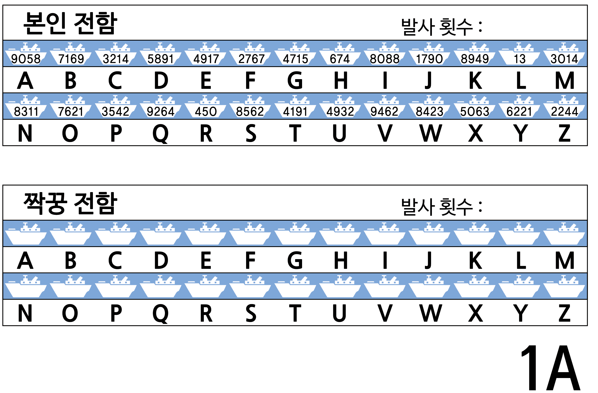
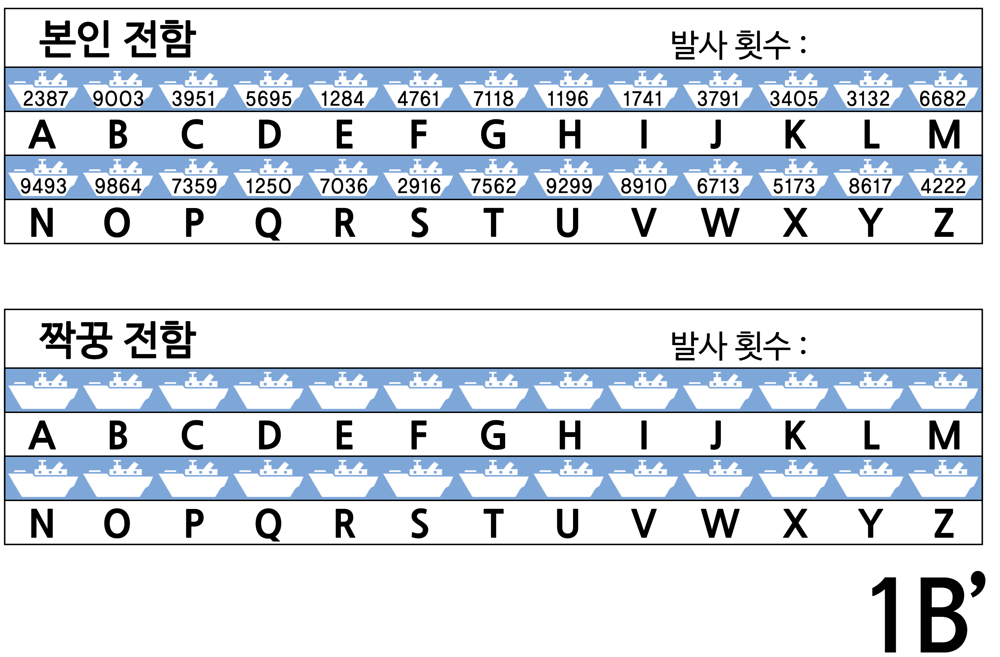
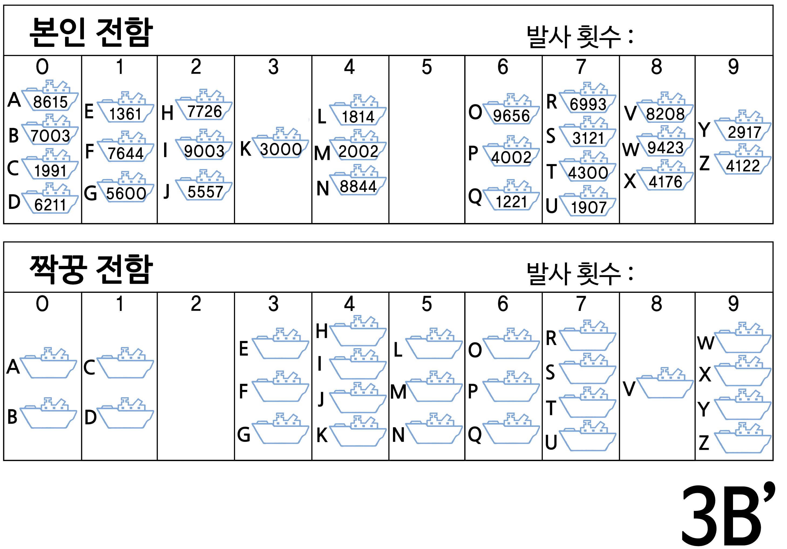
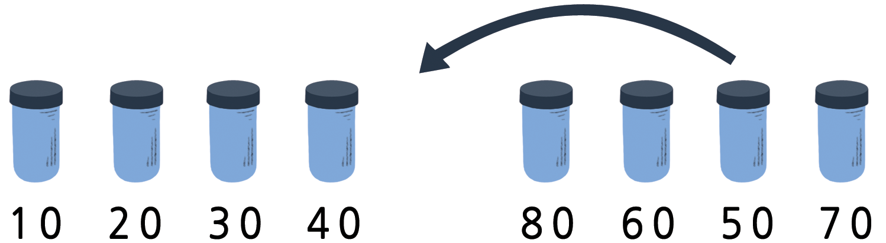
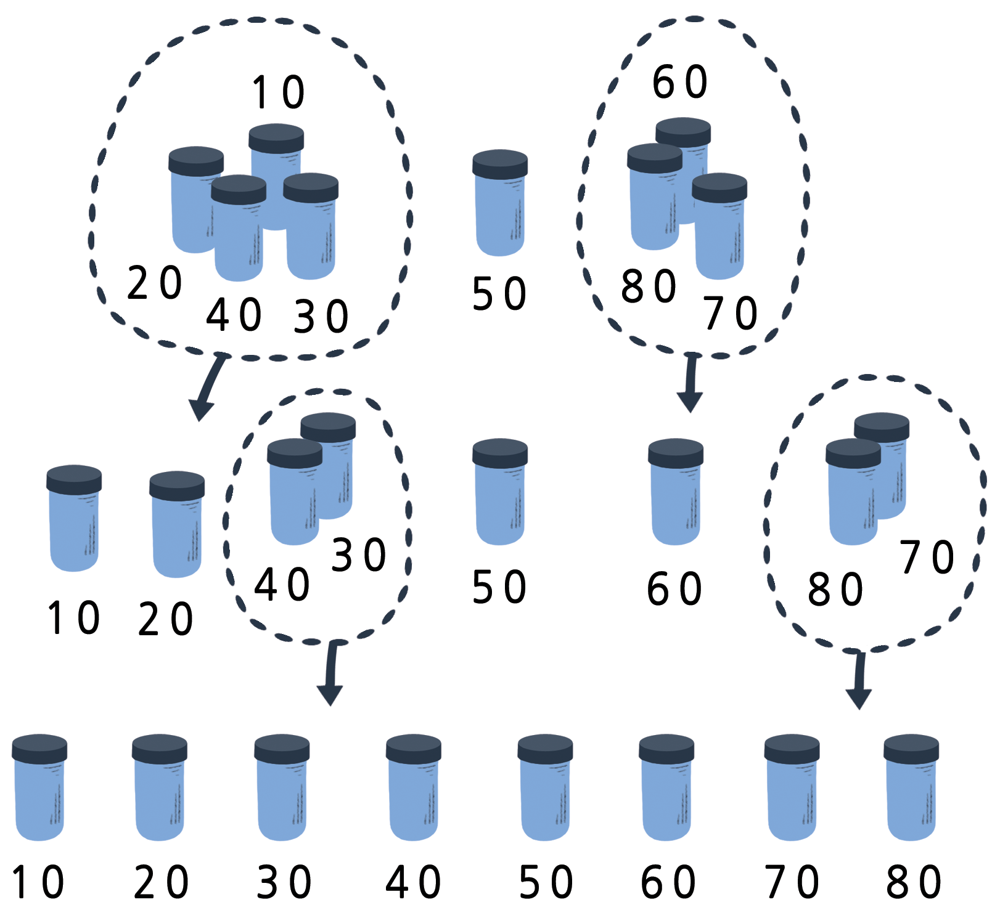
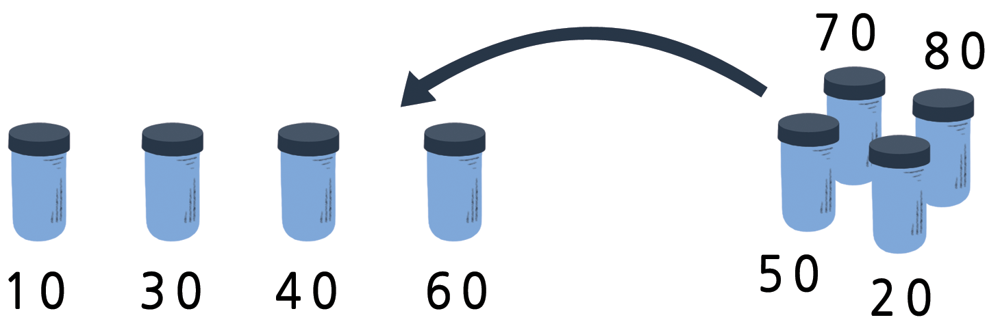
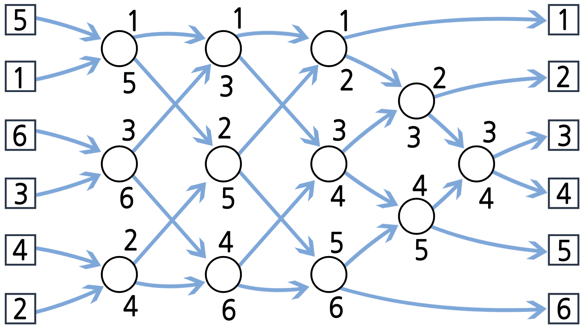
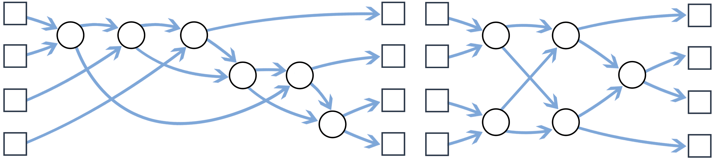
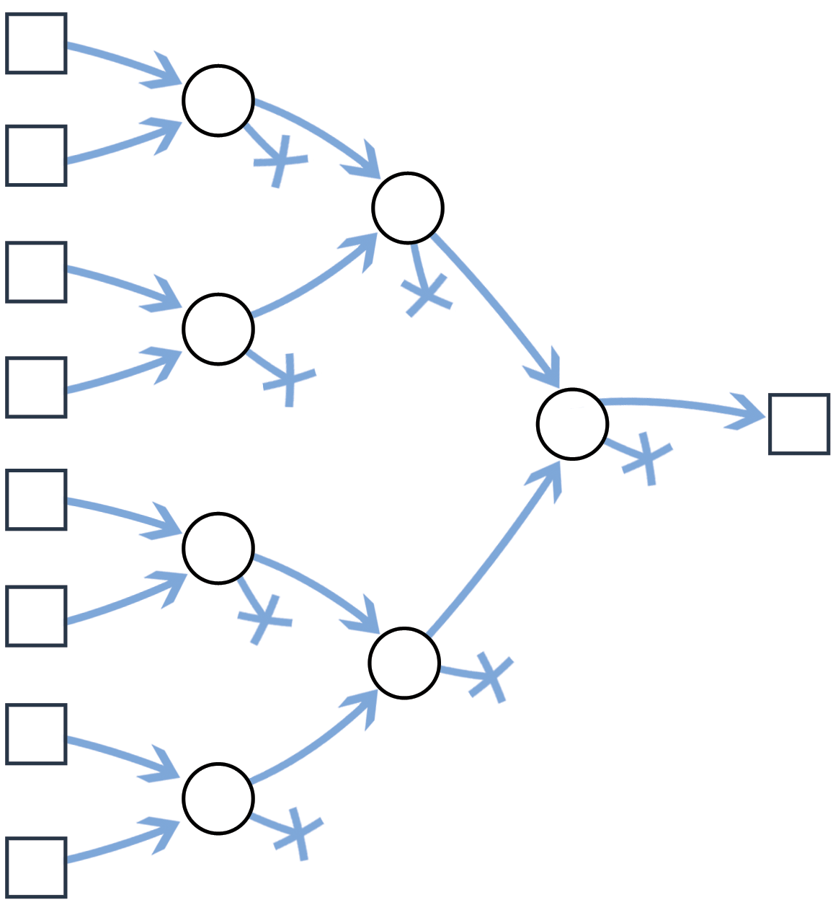
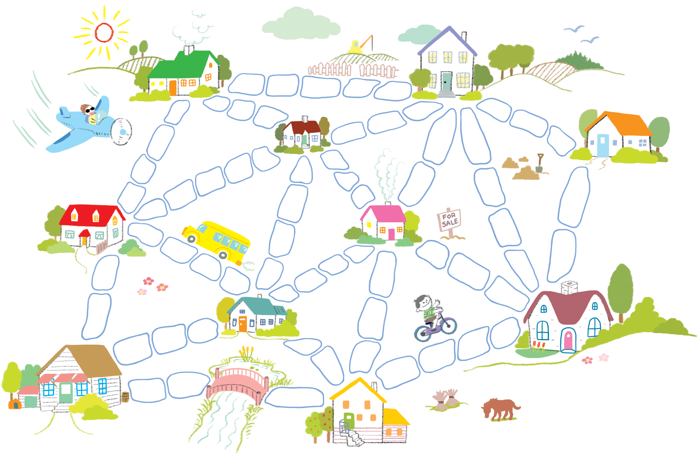

Chapter 2 제 2 부
컴퓨터를 동작시키기 — 알고리즘
- 전함 (battleship)—검색 알고리즘
- 가장 가벼운 것과 가장 무것운 것—정렬 알고리즘
- 시간내 일을 마치기—정렬 네트워크(Sorting Network)
- 진흙도시 프로젝트—최소생성나무(Minimal Spanning Trees)
- 오렌지 게임—네트워크 라우팅(Routing)과 교착상태(Deadlock)
- 돌명판(Tablets of Stone) — 네트워크 통신 프로토콜
컴퓨터를 동작시키기
컴퓨터는 미리 준비된 명령어 목록에 따라 동작합니다. 명령어는 컴퓨터로 하여금 정보를 정렬하고, 찾고, 전송할 수 있게 합니다. 이러한 작업들을 가능하면 빨리 수행할 수 있도록, 대용량 데이터 속에서 원하는 정보를 찾고, 네트워크를 통해서 정보를 송신하기 위해서 좋은 방법이 필요합니다.
알고리즘(algorithm)은 작업을 수행하기 위한 명령어 집합입니다. 알고리즘 아이디어는 컴퓨터 과학의 핵심입니다. 알고리즘은 컴퓨터로 하여금 어떻게 문제를 해결해야 하는지 지정합니다. 어떤 알고리즘은 다른 알고리즘보다 빠릅니다. 새로이 발견된 많은 알고리즘은 이전에 상대적으로 너무 오랜 시간 걸려 실행불가능하다고 생각되었던 문제를 풀 수 있도록 합니다. 예를 들어, 원주율(pi)의 백만 자리를 찾는다거나 월드와이드웹(World-Wide Web)에 여러분의 이름이 포함된 모든 페이지를 찾는다거나, 컨테이너에 짐을 넣는 가장 좋은 방법을 찾는다거나, 100자리 소수를 찾는다던가 하는 것입니다.
알고리즘(algorithm) 어원은 Mohammed ibn Musa Al-Khowarizmi 이름에서 나왔는데, Khowarizm 출신 모세의 아들 모하메드(Mohammed)는 기원후 800년경 바그다드의 지혜의 집(House of Wisdom)으로 알려진 학교에서 일하게 되었다. 모하메드의 저작은 아랍의 힌두예술에 전해졌고, 유럽으로 전파되었다. 1120년 라틴어로 변역되었고, 첫 단어가 “Dixit Algorismi”이다.
2.1 전함 - 검색 알고리즘
2.1 개요
컴퓨터로 대량의 데이터에서 정보를 찾아야 하는 작업이 많은데, 이런 작업을 수행하기 위해서 빠르고, 효율적인 방법이 필요합니다. 이번 활동에서는 선형 검색(linear > searching), 이진 검색(binary searching), 해싱(hashing)이라는 3 종류의 다른 검색 기술을 학습합니다.
2.1 교과학습 연계
- 수학 : 숫자 레벨 3이상. 숫자 탐구: 이상, 이하, 같다.
- 기하 레벨 3 이상. 모양과 공간 탐색: 좌표
2.1 기술
- 논리적 추론 (Logical reasoning)
2.1 나이
- 9세 이상
2.1 학습 교재
- 아이들 각자가 필요한 것
- 전함 게임 사본
- 1번 게임: 1A, 1B
- 2번 게임: 2A, 2B
- 3번 게임: 3A, 3B
- 예비 게임으로 1A’, 1B’, 2A’, 2B’, 3A’, 3B’ 시트가 몇 장 더 필요할 수 있다.
2.1.1 언플러그드 활동 동영상
| EBS 링크 동영상 (검색) | EBS 링크 동영상 (순위) |
|---|---|
 |
 |
2.1.2 전함 (Battleships)
2.1.2.1 들어가는 활동
아이는 전함 게임을 통해 컴퓨터가 어떻게 탐색을 수행하는지 체험할 수 있습니다. 게임 속에서 배를 어떻게 구해야 할까를 생각하게 합시다.
- 대략 15명 정도 어린이를 교실 앞에 줄을 세웁니다. 각 아이에게 무작위로 두 자리 숫자가 적힌 카드를 갖게 합니다. (카드 값은 00에서 99까지 난수입니다.) 교실의 > 나머지 아이들이 숫자를 볼 수 없도록 잘 숨깁니다.
- 줄을 서지 않은 다른 아이에게 4~5개 사탕이 담긴 상자를 나눠줍니다. 이 아이의 임무는 주어진 숫자를 찾는 것입니다. 카드의 숫자를 보기 위해서 사탕을 “줄” 수도 > 있습니다. 모든 사탕을 사용하기 전에 정답을 찾는다면, 나머지 사탕을 가집니다.
- 여러 차례 반복합니다.
- 이제 다시 카드를 섞어 다시 나누어줍니다. 이번에는 아이들이 오름차순으로 정렬하게 합니다. 검색과정을 반복하여 숫자를 찾아냅니다.
만약 숫자카드가 정렬되어 있다면, 중간 아이의 카드를 펴봄으로써 단 하나의 사탕으로 절반의 아이를 후보에서 제외할 수 있습니다. 이 과정을 반복함으로써, 단지 사탕 > 3개로 정답을 찾을 수 있습니다. 분명히 이 방법은 효율적입니다.
2.1.2.2 활동
아이는 전함게임을 통해 컴퓨터가 어떻게 탐색을 하는지 간접적으로 느낄 수 있습니다. 아이들은 게임을 진행하면서, 전함을 찾아내기 위해 사용하는 전략들에 관해서 > 사고하게 됩니다.
2.1.3 전함 — 선형 검색 게임
2.1.3.1 아이에게 다음 명령을 전달하세요.
2인 1조로 짝을 만드세요. 1명은 1A 시트(sheet)를 다른 한 명은 1B시트를 가지세요. 자신의 시트를 짝꿍에게 절대 보여주지 마세요.
모두 게임 시트 맨윗줄 전함 하나에 동그라미를 치세요. 짝꿍에게 그 번호를 알려주세요.
이제 교대로, 짝꿍의 전함이 어디에 있는지 맞춰보세요. (여러분이 배의 이름(영문 문자)을 말하고, 짝꿍이 그 이름의 전함 번호를 답합니다.)
짝꿍의 배를 맞출 때까지 얼마나 많이 대포를 쏘았나요? 대포 발사 횟수가 점수이고, 당연히 적은 횟수가 승리합니다.
(시트 1A과 1B외에 더 게임을 하고 싶은 어린이와, 잘못해서 우연히 상대방의 시트를 본 아이를 위해서 시트 1A’과 1B’가 준비되어 있습니다. 추후 게임을 더 진행하도록 > 시트 2A’, 2B’, 3A’, 3B’ 예비시트도 준비되어 있습니다.)
2.1.3.1 후속 토론
게임 점수가 몇 점인가요?
가능한 최소점수와 최대점수는 얼마가 될까요? (아이들이 같은 전함을 두 번 쏘지 않았다면, 최소 1과 최대 26입니다. 모든 위치를 하나씩, 하나씩, 검색하기 때문에 이 > 방법을 “선형 검색(linear search)”이라고 부릅니다.
2.1.4 전함 — 이진 검색 게임
2.1.4.1 지시 사항
이번 게임의 방식은 이전 게임과 동일하지만, 전함의 숫자가 오름차순으로 정렬되어 있습니다. 게임을 시작하기 전에 아이들이게 설명해 주세요.
2인 1조로 짝을 만드세요. 1명은 2A 시트(sheet)를 다른 한 명은 2B시트를 가지세요. 자신의 시트를 짝꿍에게 보여주지 마세요.
모두 게임 시트 맨위줄 전함 한개에 동그라미를 치세요. 짝꿍에게 번호를 일러주세요.
이제 교대로, 짝꿍의 전함이 어디에 있는지 맞춰보세요. (여러분이 배의 이름(영문 문자)을 말하고, 짝꿍이 그 이름의 전함 번호를 답합니다.)
짝꿍의 배를 격침시킬 때까지 얼마나 많이 대포를 쏘았나요? 대포 발사 횟수가 점수이고, 당연히 적은 횟수가 승리합니다.
2.1.4.2 후속 토론
게임점수가 몇 점인가요?
점수 적은 사람은 무슨 전략을 사용했을까요?
여러분은 먼저 어느 전함을 선택했나요? (중간 전함은 선택된 전함이 왼쪽이나 오른쪽 절반에 있다고 말해줍니다.) 여러분은 다음으로 어느 전함을 선택했나요? (다시, > 선택한 절반에서 한가운데 전함을 선택하는 것이 가장 좋은 최선의 전략입니다.)
만약 상기 전략을 사용한다면, 목표로하는 전함을 찾기 위해 얼마나 많은 공격이 필요할까요? (최대 5회). 문제를 두 부분으로 나누어서 찾아가기에 이 압업을 “이진 검색(> binary search)”이라고 합니다.
2.1.5 전함 — 해싱 검색 게임
2.1.5.1 지시 사항
앞의 게임과 마찬가지로 각자 시트를 가지고, 짝꿍에게 선택한 전함의 숫자를 말하세요.
이 게임에서는 전함이 어느 열(0~ 9)에 있는지 찾습니다. 전함 번호의 각 자리 숫자를 단순히 더합니다. 합계의 마지막 숫자가 배가 있는 열의 번호입니다. 예를 들어, > 2345 전함은 2 + 3 + 4 + 5 를 계산하여 14입니다. 합계의 마지막 숫자가 4이므로, 그 전함 4 열에 있는 것입니다. 열을 알면 해당 열중에서 목표 전함이 어느 전함인지를 > 찾아내면 됩니다. 모든 숫자를 밀어 넣고 쥐어짰기 때문에 이 방법을 해싱(hashing)이라고 합니다.
이 새로운 검색 전략을 사용해서 게임을 시작합시다. 다른 열을 선택하여 동일한 시트로 여러 번 게임을 진행할 수 있습니다.
(다른 게임과 달리 예비 3A와 3B 시트를 반드시 짝으로 사용합니다. 왜냐하면, 열에 들어있는 전함 패턴이 상응해야 되기 때문입니다.)
2.1.5.2 후속 토론
앞에서 진행했던 것과 동일하게 점수를 모아 토론하세요.
어떤 전함을 빠르게 찾을 수 있나요? (열에 혼자만 있는 전함) 어느 전함은 찾기가 더 어려웠나요? (많은 다른 많은 전함이 있는 열에 있는 전함)
세가지 검색 방법 중 가장 빠른 것은 무엇인가요? 이유는 무엇일까요?
각 3 종류의 검색 방법의 장점은 무엇인가요? 두번째 검색 전략(이진 검색)은 첫번째 검색 전략(순차 검색) 보다 빠르지만, 첫번째 검색 전략은 전함을 정렬할 필요는 > 없습니다. 세번째 검색전략(해싱 검색)은 다른 둘 보다 빠르지만, 때때로 매우 느릴 수 있습니다. 최악의 경우, 모든 배가 같은 열에 위치한다면, 첫 번째 전략과 마찬가지 > 속도로 매우 늦어버립니다.
2.1.6 확장 활동
어린이에게 자신만의 3 종류의 게임을 만들게 합시다. 두번째 게임은 숫자를 오름차순으로 정렬해야 합니다. 어떻게 하면 해싱 검색 게임을 어렵게 만들 수 있는지 > 생각하게 합시다. (모든 전함이 1 개의 열에 위치하는 것이 가장 어렵습니다). 가장 쉽게 되는 방법도 생각하게 합시다. (각각의 열에 동일한 숫자만큼 전함을 배치합니다.)
만약 찾는 전함이 없는 경우는 어떻게 됩니까? (선형 검색방법은 없다는 것을 파악할 때까지 26 회 공격을 합니다. 이진 검색방법은 5 회 필요합니다. 해싱 검색방법은 > 해당 열에 얼마나 많은 전함이 배치되어 있는지에 따라 결과가 달라집니다.)
이진 검색방법을 사용하여 100대 전함이 있는 경우 얼마나 많은 공격을 해야 전함을 찾을 수 있을까요? (약 6 회), 1,000대의 전함은 어떨까요? (약 9 회) 100만대라면 (> 약 19 회)? (전함 수가 증가하는 속도에 비해서, 필요한 공격의 횟수는 매우 느리게 증가하는 것에 주목하십시요. 매번 전함의 수가 두 배가 될 때마다, 1회 추가 공격이 > 필요하니, 전함 숫자의 대수(logarithm)에 비례합니다.)






2.1.7 컴퓨터 과학 핵심 개념
컴퓨터는 많은 정보를 저장하고 빠르게 검색해서 찾아낼 수 있어야 합니다. 가장 어려운 검색 과제 중 하나는 인터넷 검색 엔진이 1초도 되지 않는 시간 안에 수십억 웹페이지를 검색하는 것입니다. 단어, 바코드(bar code)번호, 저자 이름 같은 컴퓨터가 검색에 사용하는 데이터를 “검색키”(search key)라고 합니다.
컴퓨터는 정보를 매우 빨리 처리할 수 있어서, 정보를 찾기 위해 저장소 처음부터 원하는 정보가 찾아질 때까지 순차적으로 찾는 방법을 생각할 수 있습니다. 이 방법이 순차검색게임에서 수행했던 방법입니다. 하지만 이 방법은 매우 느리고, 컴퓨터에게 조차도 부담이 됩니다. 예를 들어, 슈퍼마켓 선반에 10,000 종의 제품이 진열되어 있다고 가정합시다. 계산대에서 바코드를 스캔한다면, 제품명과 가격을 확인하기 위해 10,000 번 컴퓨터가 작업을 수행해야 합니다. 각 제품을 스캔해서 확인하는데 천분의 1초 걸린다고 하더라도, 전체 제품을 스캔하는데 10초가 소요됩니다. 가족이 먹을 식료품 값을 지불할 경우 시간이 얼마나 소요될지 상상해 보세요.
좀더 좋은 방법은 이진 검색(binary search) 방법입니다. 이 방법을 사용하려면, 숫자가 정렬되어 있어야 합니다. 숫자 리스트의 중간 항목을 확인하고, 검색키가 양쪽 중 한쪽 절반에 있는지 확인합니다. 원하는 항목을 찾을 때까지 이 과정을 계속 반복합니다. 슈퍼마켓 사례로 돌아가서, 1 만개의 제품에 대해서 원하는 품목을 14 회 만에 찾을 수 있고, 0.02 초로 시간이 걸리는지 알아채기 쉽지 않습니다.
데이터를 찾는 세 번째 전략은 ’해싱’검색 방법입니다. 정확한 정보의 위치를 표시하기 위해 검색키(search key)를 조작합니다. 예를 들어, 검색키가 전화번호라면, 전화번호의 모든 자리수 숫자를 더한 후에 11로 나눈 나머지 값을 취합니다. 데이터의 일부분이 처리되는 다른 데이터와 관련이 있다는 점에서, 해쉬키는 네번째 활동에서 다룬 자릿수 검증(check digits)과 유사합니다. 대체로 이 방법을 사용하여 컴퓨터는 바로 정보를 찾아낼 수 있습니다. 드물기는 하지만, 복수키가 동일하게 위치한 경우, 지시한 정보를 찾을 때까지 컴퓨터가 다시 검색을 해야하므로 시간이 좀더 걸립니다.
데이터를 순서대로 정렬할 필요가 없거나, 심야시간의 경우처럼 늦은 속도가 문제가 되지 않다면, 컴퓨터 프로그래머는 검색기법으로 해싱 전략을 기본으로 사용합니다.
2.2 가장 가벼운 것과 가장 무거운 것 - 정렬 알고리즘
2.2 개요
컴퓨터를 이용하여 이름을 가나다 순으로, 약속이나 전자우편을 날짜 순으로, 상품을 가격 순으로 정렬할 수 있습니다. 정렬로 물건을 빠르게 찾을 수 있고, 끝 쪽에 위치한 > 극단값을 보기도 쉽습니다. 학교 시험 성적을 정렬한다면, 최고점과 최저점은 명확해 집니다.
빠른 컴퓨터에서도 잘못된 정렬 알고리즘을 사용하게 된다면 매우 큰 목록을 정렬하는데 시간이 오래 걸립니다. 다행히도 정렬을 빠르게 하는 몇가지 방법이 알려져 있습니다.> 이번 활동에서 정렬을 위한 다양한 방법을 익히게 됩니다. 간단한 알고리즘에 비해서 좀더 똑똑한 알고리즘이 작업을 빨리 수행하는 것도 보게 됩니다.
2.2 교과학습 연계
- 수학 : 숫자 레벨 2 이상. 실제 계량 작업을 수행.
2.2 기술
- 평형 저울 사용하기
- 순서대로 정렬하기
- 비교하기
2.2 나이
- 8세 이상
2.2 학습 교재
- 활동에 참가하는 아이들은 다음을 준비하세요.
- 다른 무게를 가지는 동일한 크기의 용기 8 개 한 세트(예. 모래 혹은 물로 채워진 우유통, 필름통)
- 평형 저울
- 워크시트 활동 : 무게 정렬 (70 페이지)
- 워크시트 활동 : 나누어서 해결하기 (71페이지)
2.2.1 언플러그드 활동 동영상
| EBS 링크 동영상 | 언플러드그 동영상 |
|---|---|
 |
2.2.2 가장 가벼운 것과 가장 무거운 것
2.2.2.1 토론
컴퓨터를 이용하여 종종 물건을 정렬하는데 사용합니다. 정렬이 중요한 장소나 사례에 대해서 자유로이 생각을 말씀해보세요. 만약 물건이 정렬되지 않는다면 무슨 일이 > 생길까요?
컴퓨터는 통상 한번에 두개 값을 비교합니다. 아이들은 이러한 제약사항을 이용하여 컴퓨터가 어떻게 동작하는지 아이디어를 얻게 됩니다.
2.2.2.2 활동
아이들을 그룹으로 나눕니다.
각 그룹은 66 페이지의 활동 워크시트와 평형 저울과 추가 필요합니다.
아이들이 활동을 수행한 후에 결과를 토론합니다.
2.2.2.3 워크시트 활동 — 무게 정렬하기
목적: 알 수 없는 무게를 가진 대상을 순서대로 정렬하는 가장 좋은 방법 찾기
필요한 준비물: 물 혹은 모래, 서로 구별할 수 없는 용기 8개, 평형 저울 한 세트
따라 하기:
각 용기를 다른 양의 모래 혹은 물로 채우고 밀봉하세요.
각 용기를 뒤죽박죽 섞어서, 더 이상 각 용기의 무게를 짐작할 수 없게 합니다.
가장 가벼운 것을 찾으세요. 가장 가벼운 것을 찾는 손쉬운 방법은 무엇일까요?
주의: 각 용기의 무게가 얼마인지 측정하기 위해서만 평형저울을 사용합니다. 단, 한번에 용기 두개 무게만 비교할 수 있습니다.
무작위로 용기 3개를 골라서 평형저울만 사용해서 가장 가벼운 것부터 가장 무거운 것까지 순서대로 정렬하세요. 어떻게 수행했는지 자세하게 작성하고 말해보세요. > 비교횟수를 적게 했던 것은 어떤 방식이었나요? 왜 그런지 이유를 설명해 보세요.
모든 용기를 가장 가벼운 것부터 가장 무거운 것까지 정렬해 보세요.
정렬 작업을 마쳤다고 생각한다면, 용기를 둘씩 짝지어 무게를 재서 용기가 순서대로 정렬되었는지를 확인해보세요.
2.2.2.4 선택 정렬 (Selection Sort)
선택 정렬(selection sort)은 컴퓨터가 사용하는 정렬 방법 중의 하나입니다. 어떻게 작동하는지 살펴봅시다. 정렬대상이 위치한 곳과 정렬결과를 놓을 곳으로 나누고, > 가장 가벼운 것을 골라 정렬결과 장소를 옮겨놓습니다. 그 다음으로 가벼운 것을 골라 옮겨 놓는 것을 반복하여 더 이상 정렬대상에 아무것도 없을 때까지 반복합니다.

얼마나 많은 비교를 수행했는지 횟수를 세어보세요.
심화문제: 8개 물체를 정렬하기 위해서 얼마나 많은 비교를 수행했는지 수학적으로 보이세요. 9개의 물체 정렬은? 20개의 물체 정렬은?
2.2.3 워크시트 활동 — 나누어서 해결하기
2.2.3.1 퀵정렬(Quicksort)
퀵정렬은 특히 정렬 목록이 많을 때, 선택 정렬보다 훨씬 빠르다. 사실 지금까지 알려진 가장 좋은 정렬방법 중의 하나다. 다음은 어떻게 퀵정렬이 작동하는지 보여준다.
무작위로 정렬 대상 중에서 하나를 골라 평형저울 한쪽에 놓습니다.
남아있는 정렬대상을 앞에서 선택한 물체와 비교를 합니다. 가벼운 것은 왼쪽에, 무작위로 고른 정렬기준은 가운데, 무거운 것은 오른쪽에 위치하게 됩니다. (우연히, 한쪽에 > 더 많은 물체가 몰려있을 수도 있습니다.)
왼쪽편과 오른편 그룹에서도 상기와 동일한 과정을 반복합니다. 무작위로 선택한 1 개 물체를 반드시 중간에 두는 것을 잊지 마십시오.
1개 이상의 물체를 가진 그룹이 없을 때까지 이 절차를 반복하여 1개 이상의 물체를 담고 있는 그룹은 하나도 남지 않게 됩니다. 모든 그룹에 1개 물체가 있을 때, 모든 > 물체는 가벼운 것부터 가장 무거운 것 순으로 정렬이 완료됩니다.

이 과정에서 얼마나 많은 비교를 했습니까?
우연히 가장 가벼운 것, 혹은 가장 무거운 것을 선택하지 않는다면, 퀵정렬이 선택정렬보다 더 효과적이라는 것을 알게 됩니다. 운이 좋아서 중간을 고른다면, 선택정렬 28회 > 비교 횟수와 비교하여 단지 14 회 비교횟수만 필요합니다. 퀵정렬은 운이 나빠도 선택정렬만큼, 대부분의 경우 선택 정렬보다 훨씬 빠르다!
심화문제: 우연히 퀵정렬이 가장 가벼운 물체를 선택했다면, 얼마나 많은 비교 작업을 수행해야 할까요?
2.2.3.2 변형과 확장
다양하게 많은 정렬 방법들이 개발되었습니다. 다음 방법들을 적용하여 무게를 정렬해봅시다.
삽입정렬(Insertion sort) 아래의 그림처럼, 정렬되지 않은 그룹에서 객체를 하나씩 빼서 정렬된 그룹에 올바른 위치에 삽입합니다. 매번 삽입할 때마다 정렬되지 않은 > 그룹의 객체는 줄어들게 되고, 정렬된 객체 목록는 늘어나게 되고, 궁극적으로 전체 리스트 객체가 정렬됩니다. 트럼프 카드 게임을 하는 카드 플레이어가 카드를 정렬하는데 > 동일한 방법을 사용하는데, 정렬할 카드를 이미 정렬된 카드를 가진 손으로 한 장씩 뽑아서 옮깁니다.

버블정렬(Bubble sort)은 순서가 뒤바뀐 객체 위치를 바꾸는 과정을 반복적으로 수행합니다. 순서를 바꾸는 작업을 반복적으로 수행해서 더 이상 바꿀 객체가 없을 때 > 멈추게 되고, 모든 객체는 정렬이 됩니다. 이 방법이 그다지 효율적이지 않지만, 다른 방법보다 이해하기 쉽다고 생각하는 사람도 많습니다.

병합정렬(Mergesort)은 ‘나누어 해결하기(divide and conquer)’ 전략에 기초한 정렬방법입니다. 첫번째로, 정렬대상이 짝수라면 동일 크기를 가지는 그룹 두개로, > 홀수라면 거의 동일한 크기의 그룹 두개로 나눕니다. 각각 두 그룹을 정렬하고, 정렬된 두 그룹을 병합합니다. 정렬된 두개 그룹을 병합하는 것은 쉽습니다. 정렬된 두 > 그룹에서 가장 작은 것을 뽑아 비교하여 병합하는 과정을 반복합니다. 아래 그림에서 40그램과 60그램이 각 그룹에서 가장 작은 것이고, 이를 비교하여 40g이 더 작기 때문에 > 추가됩니다. 이제 더 작게 되었는데 어떻게 정렬할까요? 간단합니다. 다시 병합정렬을 이용합니다. 이를 반복하면 결국 모든 정렬 대상은 각 그룹별로 1개만 남게 되고 > 병합정렬을 이용한 모든 정렬은 끝나게 됩니다.

2.2.4 컴퓨터 과학 핵심 개념
정보가 순서로 나열되어 있으면 훨씬 찾기가 쉬워집니다. 전화번호부, 사전, 책 색인은 모두 가나다 순서로 되어 있지만, 만약 정렬이 되어 있지 않은 상황을 생각한다면, > 우리는 매우 불편한 생활을 살게 될 것입니다. 지출경비 같은 숫자 목록이 잘 정렬되어 있다면, 가장 큰 숫자가 목록 상단에 위치하기 때문에 쉽게 찾을 수 있을 것입니다. > 중복된 것은 함께 있기 때문에 찾기 쉬울 것입니다.
컴퓨터는 무언가를 정렬하는데 시간이 많이 소요되기 때문에 컴퓨터 과학자들은 빠르고 효율적인 정렬방법을 찾으려고 했습니다. 삽입정렬, 선택정렬, 버블정렬 같은 느린 정렬방법은 특별한 상호아에 유용할 수도 있지만, 퀵정렬 같은 빠른 정렬방법을 자주 사용합니다.
퀵정렬은 재귀(recursion)라는 개념을 사용합니다. 재귀방법은 정렬 대상 목록을 작은 그룹으로 나누고 각 그룹에 동일한 방법을 반복해서 수행하는 것입니다. 이 특별한 접근법을 ‘나누어 해결하기(divide and conquer)’라고 합니다. 정렬 작업을 수행하기 위해서, 목록을 나누어 해결할 수 있을 만큼 적당히 작게 만드는 과정을 반복합니다. 퀵정렬은 각 그룹 객체가 1개만 남을 때까지 목록을 분할합니다. 한 품목을 정렬하는 것은 어느 방법을 사용해도 차이가 없습니다! 퀵정렬은 복잡할 수 있지만, 다른 방법보다 실무에서 훨씬 빠른 정렬방법입니다.
2.2.5 해답과 힌트
가장 가벼운 것을 찾는 최선의 방법은 지금까지 나온 가장 가벼운 것을 높고 각 객체를 차례차례 살펴보는 것이다. 즉, 두 객체를 비교하여 더 가벼운 것을 보관한다. > 이것을 다시 다른 것과 비교하여 더 가벼운 것을 보관한다. 모든 객체에 대해서 이 방법을 반복한다.
평행저울에 무게를 달아 비교하자. 세번 비교를 통해서 가능한데, 만약 아이들이 추이관계(transitive relation)를 이해한다면 때때로 두 번으로도 충분하다. (만약 A가 > B보다 가볍고, B가 C보다 가볍다면, A는 C보다 가볍다.)
심화문제
선택정렬에서 비교횟수를 쉽게 계산하는 방법을 소개합니다.
객체 2개 중에서 작은 것을 찾는 것은 1회, 객체 3개는 2회, 객체 4개는 3회…
객체 8개를 정렬하기 위해서 가장 가벼운 것을 찾기 위해서 7번 비교를 하고, 두 번째 작은 것을 찾기 위해서는 6번, 그 다음 작은 것은 5회, … 그래서,
7 + 6 + 5 + 4 + 3 + 2 + 1 = 28 비교횟수n 개 개체는 1 + 2 + 3 + 4 +… + n – 1 번의 정렬횟수가 필요합니다.
정렬횟수 총합을 구하기 위해서 그룹을 지으면 쉽습니다.
예를 들어, 1 + 2 + 3 + … + 20 합계를 구하기 위해, 아래와 같이 그룹으로 묶게 되면,
(1 + 20) + (2 + 19) + (3 + 18) + (4 + 17) + (5 + 16) +
(6 + 15) + (7 + 14) + (8 + 13) + (9 + 12) + (10 + 11)
= 21 × 10
= 210 따라서, 선택정렬의 비교횟수 총합: 1 + 2 + 3 + 4 … + n–1 = n(n–1)/2.
2.3 시간 내 일을 마치기 - 정렬 네트워크
2.3 개요
컴퓨터가 빠르기는 하지만, 컴퓨터가 문제를 해결하는데 분명히 한계가 있다. 컴퓨터의 속도를 높이는 방법 중의 하나는 여러 대의 컴퓨터로 문제를 나누어서 해결하는 것이다> . 이번 활동에서, 동시에 여러 개를 비교해서 정렬할 수 있는 정렬망(sorting networks)에 대해 알아봅니다.
2.3 교과학습 연계
- 수학 : 숫자 레벨 2 이상. 숫자 탐색: 이상, 이하.
2.3 기술
- 비교하기
- 정리하기
- 알고리즘 개발하기
- 협업으로 문제 해결하기
2.3 나이
- 7세 이상
2.3 학습 교재
- 야외 활동에 필요한 것들.
- 분필이나 그릴 것
- 6장 카드로 구성된 복사본 두벌: 복사 마스터 정렬네트워크 카드 (77 페이지)를 오려 붙이세요.
- 초시계(stopwatch)
2.3.1 언플러그드 활동 동영상
| 한글 동영상 | 영어 동영상 |
|---|---|
2.3.2 정렬 네트워크 (Sorting Network)
먼저 활동을 시작하기 전에, 지면에 아이가 걸을 정도 크기로 네트워크 다이어그램을 그립니다. 교실에서는 큰 종이나 시트를 사용하면 좋습니다.

2.3.2.1 지시사항
이번 활동에서는 정렬 네트워크를 사용해서 컴퓨터가 어떻게 난수를 정렬하는지 학습할 것입니다.
- 아이들을 6 명이 1 조가 되도록 구성합니다. 한번에 한팀(6명 1조)만 정렬 네트워크게임을 할 수 있습니다.
- 각 조원은 숫자가 적힌 카드를 받습니다.
- 각 조원은 무작위로 섞여 왼편(들어가기) 사각형 위에 섭니다. 뒤죽박죽으로 번호 순서가 섞여야 합니다.
- 각 조원은 화살표 선을 따라 움직이고, 원(‘○’)에 도착하면 다른 조원이 도착할 때까지 기다립니다.
- 친구 조원이 ‘○’’ 곳까지 왔다면 당신의 카드와 친구의 카드를 비교해 봅시다. 작은 숫자 카드를 가지고 있는 사람은 왼쪽 줄을 따라 이동합니다. 더 큰 숫자 카드를 > 가진 사람은 오른쪽 줄을 따라 이동합니다.
- 반대쪽 끝에 모두 도착했을 때, 정렬이 제대로 되었는지 확인합니다.
잘못되면 다시 처음부터 다시 시작합니다. 예를 들면, 네트워크 접점(‘○’)에서 작은 숫자는 왼쪽으로, 그렇지 않으면 오른쪽으로 진행한다는 것을 제대로 이해할 수 있는지 > 확인합시다.

2.3.2.2 복사 마스터: 정렬 네트워크


2.3.2.3 변형
아이들이 활동에 익숙해지면, 초시계를 사용하여 한 조가 네트워크를 통과하는데 얼마나 걸리는지 시간을 측정합니다.
좀더 큰 수를 카드로 사용합니다. (예, 복사 마스터 세자리 숫자를 복사해서 사용하세요.)
비교하기 힘든 큰 숫자 카드를 만들어 봅시다. 또는 단어 카드를 사용하여 가나다 순서나 영어 알파벳 순서로 정렬해 봅시다.
2.3.3 확장 활동
'1. 작은 숫자를 가진 사람이 왼쪽 대신에 오른쪽으로 가면, 혹은 역으로 하면 무슨 일이 생길까요? (숫자는 반대로 정렬될 것입니다.)
네트워크 역방향으로 진행하면 어떻게 될까요? (반드시 동작하지는 않습니다. 아이들은 제대로 정렬되지 않고 나오는 경우를 발견할 수 있어야 합니다.)
'2. 좀더 크거나 작은 네트워크를 설계해 보세요. 예를 들어 숫자 세개를 정렬하는 네트워크가 있습니다. 아이들 각자 자신만의 네트워크를 그려보세요.

'3. 다음은 입력 숫자 4개를 정렬하는 서로 다른 두 개의 네트워크입니다. 어느 쪽이 더 빠를까요? (두 번째가 더 빠릅니다. 첫 번째 네트워크는 순차적으로 모든 비교를 > 수행하는 반면에 두 번째 네트워크는 동시 비교를 수행합니다. 첫번째 네트워크는 순차처리 예가 되고, 반면에 두번째 네트워크는 더 빠른 병렬처리를 사용합니다.)

'4. 좀더 커다란 정렬 네트워크를 만들어 보세요.
'5. 입력 데이터 중에서 최소 혹은 최대값을 찾아내기 위해서도 네트워크를 활용합니다. 예를 들어, 여기 최소 출력값을 얻기 위한 입력 숫자 8개를 가진 네트워크가 > 있습니다. (다른 값들은 네트워크에서 사라집니다.)

'6. 일상생활에서 병렬처리하면 빠르게 할 수 있는 일이 어떤게 있을까요? 병렬적으로 처리해도 별로 효과가 없는 일은 무엇일까요? 예를 들어, 요리를 할 때 조리기구를 하나만 사용한다면 무척이나 느릴 것입니다. 왜냐하면 조리기구를 순차적으로 요리를 한다면, 요리 하나가 끝날 때까지 기다려야 하기 때문에 시간이 오래 걸릴 것입니다. 더 많은 사람을 고용해서 빨리 끝날 수 있는 일과 그렇지 못한 일은 무엇이 있을까요?
2.3.4 컴퓨터 과학 핵심 개념
오늘날 컴퓨터를 점점 더 많이 사용함에 따라 더 빠르게 컴퓨터가 정보를 처리해주기를 원합니다.
컴퓨터 속도를 높이는 방법은 동일한 작업을 수행함에 있어 더 적은 연산절차(활동 6과 7에서 학습)를 가진 프로그램을 작성하는 것입니다.
문제를 더 빠르게 해결하는 다른 방법은 동시에 같은 작업을 나누어서 다수 컴퓨터로 작업을 수행하는 것입니다. 예를 들어, 숫자 6개 정렬 네트워크에서, 6개 숫자를 > 정렬하기 위해서 12번의 비교가 필요하지만, 동시에 최대 3회 비교를 한번에 수행했다. 이것이 의미하는 것은 정렬에 걸리는 시간이 5회 비교작업 시간과 동일하다는 것이다. > 이 병렬 네트워크는 목록을 순차적으로 비교하여 처리하는 것보다 두배 이상 빨리 정렬할 수 있다.
모든 작업이 병렬처리를 통해서 빨라질 수 있는 것은 아닙니다. 한 사람이 10 미터 도랑을 판다고 상상해 봅시다. 만약 10 사람이 1 미터씩 도랑을 판다면, 10 미터 파는 > 작업은 훨씬 빠르게 끝납니다. 하지만 동일한 전략이 10미터 깊이 땅굴을 팔 때는 사용될 수 없습니다. 첫 1 미터 작업이 끝날 때까지 다음 1미터 작업을 할 수 없기 > 때문입니다. 컴퓨터 과학자들은 컴퓨터를 병렬로 작동함으로써 빠르게 문제를 해결하는 방법을 찾으려고 적극적으로 노력하고 있습니다.
2.4 진흙도시 프로젝트 - 최소생성나무(Minimal Spanning Trees)
2.4 개요
우리 사회는 전화, 에너지 공급, 컴퓨터, 도로 등 다양한 네트워크로 연결되어 있습니다. 각각의 네트워크에는 도로, 케이블, 혹은 무선 네트워크를 어떻게 배치하는지에 > 대한 설계 결정이 녹여져 있습니다. 효율적으로 네트워크에서 객체를 연결하는 방법을 파악할 필요가 있습니다.
2.4 교과학습 연계
- 수학 : 기하 레벨 2/3 이상. 모양과 공간 탐색: 지도에서 최단 거리 찾기
2.4 기술
- 문제 해결하기
2.4 나이
- 9세 이상
2.4 학습 교재
- 아이들이 필요한 것
- 워크시트 활동: 진흙도시 문제 (page 83)
- 판지를 작은 사각형으로 자른 것 (대략 아이당 40개)
2.4.1 언플러그드 활동 동영상
| EBS 링크 동영상 | 언플러드그 동영상 |
|---|---|
 |
찾고 있음 |
2.4.2 진흙 도시
2.4.2.1 들어가며
이번 활동을 통해서 현실 세계 문제에서 어떻게 최적의 해결책을 찾는데 컴퓨터를 이용하는지 보여줍니다. 예를 들어, 모든 가정에 전기를 공급하는 전선과 도시 가스를 > 공급하는 가스관을 어떻게 연결하는지가 좋은 사례입니다. ‘진흙도시’(Muddy City) 문제를 설명하는 78 페이지 워크시트를 사용하세요.
2.4.2.2 후속 토론
아이들이 발견한 해결책을 공유하세요. 아이들은 무슨 전략을 사용했나요?
최적 해결책을 찾는 좋은 방법중의 하나는 빈 지도에서 시작해서, 빈 지도에서 점차적으로 도로 포장을 늘려가면서 모든 집들이 연결되게 하는 것입니다. 도로 포장은 최단 > 거리에서 길어지는 순서대로 진행하지만, 이미 연결된 집은 추가로 연결을 하지 않습니다. 만약 동일 길이 포장도로가 추가되어 순서를 바꾼다면 다른 해결책을 찾은 것입니다> . 두 가지 가능한 해결책을 다음에 있습니다.

다른 전략은 모든 도로가 포장된 상태에서 시작해서, 필요하지 않은 도로포장를 제거하는 것입니다. 하지만, 더 많은 노력이 듭니다.
현실세계에서 네트워크는 어디에 사용되고 있을까요?
컴퓨터 과학자는 이런 네트워크 표현을 “그래프(graph)”라고 합니다. 실제 네트워크를 그래프로 표현하여 마을과 마을을 연결하는 도로 설계 또는 지역과 지역을 연결하는 > 항공로 설계와 같은 문제를 풀어 최상의 네트워크를 설계하는데 활용합니다.
두 점을 연결하는 최단 거리를 찾는 방법, 모든 점을 연결하는 가장 짧은 경로를 찾는 방법처럼 그래프를 적용한 많은 다양한 알고리즘이 있습니다.
2.4.3 워크시트 활동: 진흙 도시 문제
옛날에 전혀 도로가 없는 도시 하나가 있었습니다. 비가 온 뒤에 땅이 진흙탕이 되어 도시를 돌아다니는 것은 무척이나 어려웠습니다. 자동차는 진흙 웅덩이에 빠지고, > 사람들 신발은 곧 더러워졌습니다. 진흙 도시 시장은 도로의 일부를 포장하기로 결정하였지만, 예산을 많이 사용하고 싶지는 않았습니다. 주민들이 수영장 건립을 원했기 > 때문입니다. 그래서 시장은 다음의 두 가지 조건을 제시했습니다.
- 도로가 충분히 포장되어 누구나 자신의 집에서 다른 사람의 집으로 포장된 도로만을 이용하여 이동할 수 있어야 한다.
- 포장비용은 최대한 저렴하여야 한다.
다음에 마을 지도가 있습니다. 포장하기 위해서 돌을 사용하는데, 돌의 개수가 집과 집 사이를 포장하는데 드는 비용을 나타냅니다. 모든 집을 포장된 길로 연결하고 비용이 > 최대한 저렴하게 경로를 구축해 보세요. (참고로, 다리는 포장에서 제외합니다.)
이 문제를 풀기 위해서 무슨 전략을 사용했나요?

2.4.4 변형과 확장
다음은 진흙 도시와 도로를 그래프로 표현한 사례입니다.

집은 원으로 표시하고, 진흙 도로는 선으로 표시하고, 도로 길이는 선 옆의 숫자로 표시합니다.
종종 컴퓨터 과학자와 수학자는 최적화 문제를 표현하기 위해 이런 종류의 그림을 사용하고, 그래프(graph)라고 합니다. 처음에는 혼동스러울 수 있습니다. 왜냐하면 > 통계에서 사용하는 “그래프”는 숫자 데이터를 표현하기 위한 막대그래프 같은 차트를 의미하기 때문입니다. 하지만 컴퓨터 과학자가 사용하는 그래프는 이것과 연관되어 있지 > 않습니다. 길이를 반듯이 도로 길이에 비례하여 작성할 필요는 없습니다.
자신만의 “진흙도시”와 같은 비포장 도로를 최소 비용으로 포장하는 문제를 만들어 봅시다. 지도를 그래프 형태로 보여주는 것도 좋습니다. 그리고 친구에게 그 문제를 풀게 > 해 봅시다.
가장 좋은 해결책으로 얼마나 많은 도로가 포장되어거나 혹은 연결되어야 하는지 기술할 수 있는 규칙을 찾았습니까? 도시에 얼마나 많은 집이 있는지가 그 규칙과 관련이 있나요?
2.4.5 컴퓨터 과학 핵심 개념
여러분이 전기, 가스, 수도 등을 새로운 거주지에 공급하는 것을 설계한다고 가정해봅시다. 모든 집의 전선 혹은 파이프는 공공기업(한전, KT, 가스공사 등)에 연결되어야 > 합니다. 각각의 집은 어떻게든 네트워크에 연결되어야 하지만 어떤 경로를 취할 것인가는 연결만 된다면 그다지 문제가 되지 않습니다.
네트워크 경로 길이가 최소가 되도록 설계하는 작업을 “최소생성나무”(minimal spanning tree)문제라고 합니다.
“최소생성나무”는 가스나 전력 네트워크에만 유용한 것이 아닙니다. 컴퓨터 네트워크, 전화 네트워크, 송유관, 항공운항 경로 문제를 해결하는데 도움이 됩니다. 하지만, > 여행의 최적 경로를 결정할 때는 비용이 얼마나 드는지, 여행이 얼마나 편안할지도 함께 고려해야 합니다. 단지 비용이 저렴하다는 이유로, 처음으로 여행가는 나라에 > 비행기를 장시간 타면서 시간을 낭비하려는 사람은 많지 않을 것입니다. 비행경로나 화물 운송경로를 최소화하는데 사용되는 진흙도시 알고리즘은 여행경로와 같은 네트워크 > 최적화하는 데에는 그다지 도움이 되지 않습니다.
최소생성나무 알고리즘은 그래프에 관한 다른 문제(예를 들어 “외판원 문제 [Travel Salesman Problem, TSP]”)를 해결할 때 단계중의 하나로서 유용합니다. 외판원 문제는 > 네트워크의 모든 점을 방문하는 최소 경로를 찾는 것입니다.
최소생성나무 문제를 해결하는 효과적인 알고리즘과 방법이 있습니다. 최적의 해결책을 주는 간단한 방법은 아무 연결도 없는 상태에서 시작해서, 앞에서 연결되지 않은 > 점들을 비용이나 크기가 커지는 순서대로 연결을 하는 것입니다. 1956년에 J.B. Kruskal이 발표하여 Kruskal 알고리즘이라고 합니다.
“외판원 문제” 등, 그래프에 관한 많은 문제에 관해서는 지금도 컴퓨터 과학자가 가장 최선의 가능한 해결책을 찾아내는데 충분히 빠른 방법을 찾으려고 노력을 경주하고 > 있습니다.
2.4.6 해답과 힌트
2.4.6.1 변형과 확장
도시에 집이 n개 있다면 얼마나 많은 도로 연결이 필요할까요?
최적의 해결책은 정확하게 n-1 개 연결을 갖는 것으로 밝혀졌다.
n-1개 연결은 n 개 집을 연결하는데 충분하다.
왜냐하면, 연결을 하나 더 추가하는 것은 집 사이에 불필요한 대체가능한 연결을 하나 더 만들기 때문이다.
2.5 오렌지 게임 - 네트워크 라우팅(Routing)과 교착상태(Deadlock)
2.5 개요
자동차가 다니는 도로나 메시지가 지나가는 인터넷 같이 하나의 자원을 많은 사람이 공유하여 사용할 때, 교착상태(deadlock) 발생 가능성이 있다. 교착상태가 발생하는 것을 > 피하는 방법은 협력하는 것이다.
2.5 교과학습 연계
- 수학 : 논리와 추론 개발하기
2.5 기술
- 협력하여 문제 해결하기
- 논리적 추론하기
2.5 나이
- 9세 이상
2.5 학습 교재
- 각 아이들에게 필요한 것
- 오렌지 두 개 혹은 테니스 공
- 부착이 가능한 이름표 또는 이름 스티커

2.5.1 언플러그드 활동 동영상
| 한글 동영상 | 영어 동영상 |
|---|---|
2.5.2 오렌지 게임
2.5.2.1 들어가며
이 게임은 협력하여 문제를 해결하는 게임이다. 참가자 전원이 자신의 이름이 이니셜로 새겨진 오렌지를 모두 갖는 것이 게임의 목표입니다.
5명 혹은 그 이상의 아이들이 한 그룹으로 원을 그려 앉습니다.
아이들 모두 자신의 이니셜을 이름표나 이름 스티커에 적습니다. 한 명을 제외한 모든 아이들은 오렌지 두 개에 자신의 이니셜을 붙입니다. 제외된 한 명은 하나만 > 오렌지에 붙여 한 손에 들고 있고, 나머지 손은 빈손입니다.
원에 둘러 앉은 아이들에게 무작위로 오렌지를 나눠줍니다. 오렌지 하나만을 가진 한 명을 제외하고 모든 아이들은 오렌지 두개를 가집니다. (단, 어떤 아이도 자신의 > 이니셜이 적힌 오렌지를 갖으면 안됩니다.)
자신의 이니셜을 가진 오렌지를 모든 아이들이 가질 때까지 아이들은 오렌지를 전달합니다. 이때 두 가지 규칙을 지켜야 합니다.
한번에 상대에게 전달할 수 있는 오렌지는 1 개뿐입니다.
바로 옆 사람의 손이 빈 경우에만 오렌지를 전달할 수 있습니다. (즉, 옆 사람에게 오렌지를 전달할 수 있는 아이는 한번에 1 명뿐입니다.)
만약 아이들이 욕심을 부려 자신의 이니셜이 적힌 오렌지를 손에 넣어 다른 아이에게 오렌지를 전달하지 못하게 한다면 그룹 전체가 게임의 목표를 달성할 수 없다는 것을 > 재빨리 알아챌 것입니다. 이 때, 누군가 자신의 이니셜이 적힌 오렌지를 차지하여 게임에서 “승리”하는 것이 목적이 아니라, 모두가 자신의 이니셜이 적힌 오렌지를 가질 때 > 게임 퍼즐을 풀 수 있다는 것을 강조할 필요가 있다.
2.5.2.2 후속 토론
아이는 문제를 해결하기 위해 어떤 전략을 사용했습니까?
실생활에서는 어떤 장소에서 교착상태(deadlock)를 경험했습니까? (교통 체증, 야구경기에서 베이스를 도는 주루선수, 많은 사람이 동시에 출구를 통과하려는 모습 등)
2.5.3 확장 활동
좀더 작거나 큰 원을 그려 활동을 확대해 보자
- 아이들이 새로운 규칙을 제시하도록 하자
- 어떤 말을 하지 말고 활동을 진행해 보자
- 아이들이 한 줄로 앉던가, 두명 이상의 아이가 옆에 앉도록 형태를 바꿔서 진행해 보자. 몇가지 확장활동 제안 예시가 다음에 있다.
2.5.4 컴퓨터 과학 핵심 개념
도로, 전화, 컴퓨터 시스템 같이 많은 네트워크에서 라우팅(Routing)과 교착상태(Deadlock)는 흔한 문제다. 엔지니어들은 이런 문제를 어떻게 해결할 것인가, 문제를 풀기 쉬운 네트워크를 어떻게 설계할지에 대해서 많은 연구를 한다.
라우팅, 정체, 교착상태는 많은 네트워크에서 좌절감을 안겨줄 정도의 문제를 제시한다. 출퇴근 혼잡 시간대에 교통상황을 상상해 보세요. 뉴욕이나 서울 도로에 너무나 많은 자동차가 흘러나와 혼잡한 상황이 되어서 어떤 자동차도 움직일 수 없는 교착상태가 되는 경우가 종종 있습니다. 때때로, 은행 같은 금융업무용 컴퓨터가 다운이 될 때는 통신 네트워크에 교착상태가 원인입니다. 라우팅이 쉽고, 효율적이며, 정체가 최소화되는 네트워크를 설계하는 것이 많은 엔지니어들이 직면한 어려운 문제입니다.
여러 사람이 동일 시간대에 동일한 데이터를 요구하는 것은 자주 있는 일입니다. 고객의 예금 잔고와 같은 데이터를 갱신할 때, 그 찰라의 시간에 “잠금(lock)”을 걸어 타인에게 보이지 않도록 하는 것이 중요합니다. 만약 잠겨 있지 않으면, 다른 누군가가 데이터를 동시에 갱신해서, 잘못된 예금 잔고가 기록되어 버릴 수도 있기 때문입니다. 그러나, 이러한 잠금 설정이 다른 항목의 잠금 설정에 의해 충돌나거나 간섭이 발생하는 상황이 되면 교착 상태가 발생할지 모릅니다.
컴퓨터 설계에 있어 가장 획기적인 업적 중 하나는 병렬 컴퓨팅(parallel computing)의 등장입니다. PC같은 개인용 컴퓨터 수백, 수천 개의 중앙처리장치(processor)를 네트워크로 결합하여 하나의 강력한 컴퓨터를 만든 것입니다. 이러한 병렬 컴퓨터를 작동시키기 위해서 오렌지 게임과 같은 많은 문제가 네트워크에서 항상 (훨씬 빠르게) 재현되고 있는 것입니다.
2.6 돌명판(Tablets of Stone) - 네트워크 통신 프로토콜
2.6 개요
컴퓨터는 메시지를 통해 인터넷으로 서로 대화한다. 하지만, 인터넷은 신뢰성이 없어서, 때때로 메시지 일부가 유실되기도 한다. 메시지에 특정 정보 일부(bits of information)를 추가해서 송신이 제대로 되었는지 확실히 한다. 이 정보가 프로토콜을 구성한다.
2.6 교과학습 연계
- 수학 : 로직과 추론 개발
- 국어(English) : 의사소통, 대인관계 경청(interpersonal listening)
2.6 기술
- 협력하여 문제 해결하기
- 논리적 추론하기
2.6 나이
- 9세 이상
2.6 학습 교재
- 각 아이들에게 필요한 것
- 많은 공백
명판(Tablet)
- 각 배달원이 필요한 것
- 메시지 실행 카드 한 벌
- 선생님이 필요한 것
- 초시계
2.6.1 돌명판(Tablets of Stone)
2.6.1.1 들어가며
이 활동에서 학생들은 어떻게 서로 다른 통신 방법이 성공적으로 운영될 수 있는지 생각하게 될 것이다. 장소에 규칙과 절차를 살펴봄으로써, 학생들은 통신 프로토콜에 자연스럽게 소개된다. 역할극 시나리오를 직접 수행해봄으로써, 학생들은 신뢰성이 없는 환경아래에서 자신만의 프로토콜을 검정하게 되는데, 인터넷 패킷 교환(packat switching), 좀더 구체적으로 TCP/IP 환경과 유사하다.
2.6.1.2 준비 (30분)
먼저 카드를 모은다. (아래) 활동카드를 출력하고 가위로 자른다. 그럼 게임 준비가 되었다.
다음, 학생이 전송할 메시지를 정한다. 중요한 것은 메시지가 국문(영문) 문장이거나 구조를 다시 조합할 수 있는 것은 안된다. “1LHC255HD(RLLS” 같은 것이 적합한 메시지다 혹은 전화번호.
“명판(tablet)” 사본을 출력한다. 각 명판은 문자 혹은 숫자 6개를 넣을 수 있는 자리가 있다. 그래서, 한 명판에 전체 메시지를 전부 맞추어 넣을 수는 없다. 얼마나 오랜 시간동안 게임을 할것인지에 달려있지만, 학생당 대략 명판 30개가 필요할 것이다.
주의: 활동카드가 3가지 유형이 있다— 지연(delay), 전달금지(don’t deliver), 전달(deliver). 세가지 유형 활동 카드 비율을 조절해서 메시지 전달자 품질을 조정할 수 있다. “전달(deliver)” 활동카드를 좀더 많이 주면 좀더 신뢰성 있는 메시지 전달자가 된다. 좀더 > “지연(delay)”과 “전달금지(don’t deliver)”를 주게되면, 덜 신뢰성 있는 네트워크를 의미하게 된다. 이러한 활동카드는 컴퓨터 네트워크/통신 채털과 유사하다.
2.6.1.3 게임하기
학급을 쌍(pair)으로 나눈다. 서로를 볼 수 없게 하거나 서로 의사소통할 수 없게 각 쌍이 떨어져 앉아있게 하는 것이 매우 중요하다. 교실 두개가 이상적이지만, 교실 반대편에 학생들이 앉아 있는 것으로도 충분하다.
한쪽에 다른 상대방에게 전달할 메시지를 나눠준다.
“활동카드(Action Cards)”를 섞고 메시지 전달자를 선정한다. 만약 홀수가 나오면, 그 학생이 메시지 전달자가 될 수 있다. 만약 학급이 크다면, 한명 이상의 메시지 전달자가 필요할 수 있다.
. 한 학생이 이제 명판에 적고 명판을 메시지 전달자에게 건내준다. 명판위에 적어도 다른 사람 이름이 있어야 한다.
. 메시지 전달자가 가장 위에 있는 활동카드를 뽑고, 뒤집어 읽고, 그것을 사용해서 명판으로 무엇을 할지 결정한다.
. 4번과 5번 단계를 각 명판으로 반복한다.
약 5분간의 혼란과 좌절 뒤에, 학생들은 이름만으로는 프로토콜로 충북히 만족스럽지 않다는 것을 깨달아야 한다. 수업을 중단시키고, 토론하자… 학생들이 갖는 첫번째 이슈가 무엇일까? 순서일까? 혹시, 6개 자리중에서 하나에 명판 숫자를 넣어 사용하는 것이 최선이 아닐까? 이것이 의미하는 바는 실제 데이터에는 적은 공간이 할당된다는 의미가 된다 — 이제 사용해야하는 명판 숫자에 관해서 이것이 의미하는 바는 무엇일까?
잠시 시간이 흐른 뒤에, 다른 문제를 알아챌지 모른다. 이러한 문제도 또한 토의되어야 한다. 가능한 문제는 명판 분실이 될 수 있고 명판이 전달이 제대로 되었는지 알지 못하고, 명판을 재전송했는지 알지 못하는 것도 있다. 제시할 수 있는 해결책은 받았다는 증명(> acknowledgement)을 다시 보내고, 또다른 명판을 보내기 전에 받았다는 증명을 받을 때가지 기다린다 — 이것이 의미하는 바는 수신 학생에게도 또한 메시지를 송신할 > 빈 명판이 필요하다는 것이다. 그리고, 게임을 다시 시작하기 전에 문자 6개 응답이 무엇을 의미하는지 동의해야 할 것이다.
이 게임에 적어도 학생이 두 명 필요하다. 하지만, 가능하면 많은 학생을 갖기 추천한다. 만약 학급이 크다면, 메시지 전달자를 몇명 고려한다. 다시 한번, 메시지 전달자 숫자를 학급에서 토의하자. 만약 메시지 전달자가 많다면 무엇이 발생할까? 만약 메시지 > 전달자가 한명이면 무엇이 발생할까?
2.6.2 워크시트 활동: 활동카드(Action Cards)

2.6.3 워크시트 활동: 메시지 전달

2.6.4 돌명판(Tablets of Stone)
고대 도시에는 매우 중요한 통치자(Governors)가 많았다. 통치자는 도시가 어떻게 운영되어야 하는지를 결정하고 매우 중요한 결정을 내린다. 통치자 각자는 도시 도처에 서로 다른 집에서 살았다.
통치자들은 종종 통신하고자 했으며, 도시 도처에서 메시지를 주고 받을 필요가 있었다. 통치자는 본인이 살고 있는 집번호로 식별되었고, 통치자는 모두 메시지를 전달하는 > 것을 업으로 하고 있는 메시지 전달자(messenger) 집단에 접근할 수 있다.
메시지를 전송하는 유일한 방식은 커다란 사각형 돌명판(table of stone)에 적는 것이었다. 메시지 전달자는 돌명판을 가지고 목적지까지 들고갔다. 돌명판은 크기가 고정되어서 돌명판에는 정보로 6 조각만 맞춰 넣을 수 있다. 정보 한조각은 문자 하나 혹은 숫자 하나가 될 수 있다. 메시지는 다수 명판에 쪼개질 수 있고, 명판이 매우 무겁기 때문에 한번에 하나만 옮겨 전달 될 수 있다.
메시지 전달자가 건망증이 심하고 게으르기 때문에 항상 올바른 메시지를 전달할지 신뢰를 가질 수 없다. 종종 근무시간에 너무 오래 휴식을 취하거나 도시를 탈출하여 도망가기도 한다.
통치자는 통신을 신뢰성있게 만들 방법을 찾고 싶고, 통치자 모두가 따를 수 있는 규칙 집합을 개발하고자 한다. 이렇게 함으로써, 메시지가 전달여부와 메시지가 올바르게 > 맞는 것인지 알 수 있다. 통치자는 이미 명판에 목적지가 명시되어야 한다고 결정했다.
여러분이 속한 집단에서, 수행할 작업은 통치자가 통신에 사용할 규칙을 개발하는 것이다…
2.6.5 컴퓨터 과학 핵심 개념
인터넷에서, 데이터는 전송을 위해서 패킷(package)으로 쪼개진다. 하지만, 패킷이 돌아다니는 경로(channel)가 항상 신뢰성이 있는 것은 아니다. 때때로 개별 패킷은 손상되고, 유실되거나 순서를 잃어버리기도 한다.
돌명판에서, 명판(tablet)이 패킷이 되고 명판의 내용이 데이터가 된다. 패킷은 데이터와 헤더(header) 정보를 담고 있다. 헤더정보 크기가 얼마나 많은 정보가 전송될 것인지에 영향을 미친다— 패킷 크기가 유한하기 때문에 균형을 맞추어야 한다.
TCP와 UDP 같은 인터넷 프로토콜은 신뢰성 있고 효율적인 데이터 전송을 할 수 있도록 이런 요인을 잘 균형맞춘다.
여기 활동은 컴퓨팅 과학의 안쪽(Computing Science Inside) 프로젝트 중 하나를 차용해서 변형했다. 출처